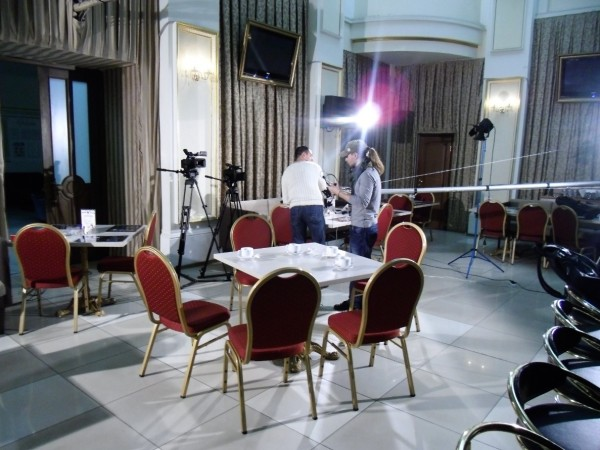

Газете «МК в Кузбассе» в этом году исполняется аж 13 лет. С Игорем Рожковым и Натальей Гузевой из МК я знаком тоже уже довольно давно (еще с тех времён, когда МК была частью «Русской Тройки» и её редакция находилась на Спортивной, 28). С недавних пор Наталья, кроме работы в МК ведёт ещё и передачу на телеканале «Мой город».
Сам я зрителем телеканала не являюсь: во-первых вообще мало смотрю телевизор, а во-вторых «Мой город» можно увидеть только клиентам Стрим-ТВ и гудлайновского «Бамбука», а у меня — Твист. Несмотря на несмотрение передачи отмечу, что телеканал «Мой город» в моём городе уже занял заметную нишу. Я часто встречаюсь с его журналистами на разного рода пресс-конференциях и «новостных поводах», а совсем недавно даже играл в пэйнтбол. В сетке вещания «Моего города» уже довольно много программ. Коллектив молодой и амбициозный.
Передача, на которую меня пригласила Наталья была посвящена собственно самому дню рождения газеты «МК в Кузбассе» и будущему печатных СМИ вообще. Кроме ведущей в кафе (в роли кафе в этот раз выступал ресторан «Изуми») были вышеупомянутый Игорь Рожков и Жанна Ненарокова из «Интерфакса». Тема для меня была не совсем новая. Пару месяцев назад кемеровский медиаклуб уже проводил в КемГУ диспут о противостоянии традиционных СМИ и интернета. Тем не менее встретиться со старыми знакомыми было очень приятно.
